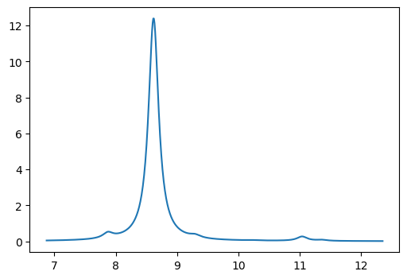
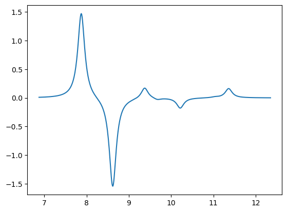
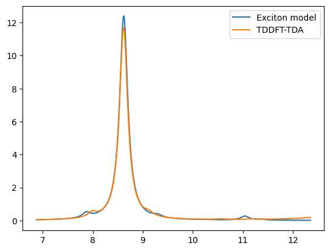
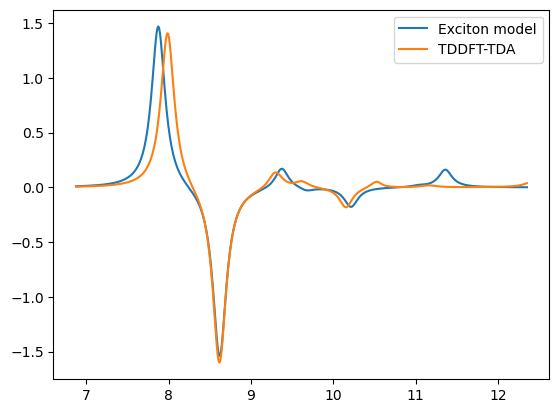

Implementation#
Example#
Import modules#
import veloxchem as vlx
import numpy as np
import py3Dmol as p3d
Set up molecule and basis set#
# molecule and basis
mol_xyz = """12
c2h4-dimer
C -1.37731 1.01769 -0.71611
C -0.04211 1.07142 -0.72602
H -1.96225 1.74636 -0.16458
H -1.90859 0.23094 -1.24174
H 0.49049 1.84498 -0.18262
H 0.54315 0.32947 -1.25941
C -1.17537 -1.48468 2.37427
C 0.06813 -1.06658 2.62697
H -1.35657 -2.40378 1.82687
H 0.92893 -1.63558 2.29127
H -2.03527 -0.90348 2.69157
H 0.24803 -0.13578 3.15527
"""
molecule = vlx.Molecule.read_xyz_string(mol_xyz)
basis = vlx.MolecularBasis.read(molecule, 'def2-svp')
3Dmol.js failed to load for some reason. Please check your browser console for error messages.
Set up the exciton model driver#
# exciton model setup
exmod_settings = {
'fragments': '2',
'atoms_per_fragment': '6',
'charges': '0',
'nstates': '5',
'ct_nocc': '1',
'ct_nvir': '1',
}
method_settings = {'dft': 'no'}
exmod_drv = vlx.ExcitonModelDriver()
exmod_drv.update_settings(exmod_settings, method_settings)
Initializes exciton model Hamiltonian and transition dipoles#
monomer_natoms = list(exmod_drv.natoms)
n_monomers = len(monomer_natoms)
monomer_start_indices = [sum(exmod_drv.natoms[:i]) for i in range(n_monomers)]
npairs = n_monomers * (n_monomers - 1) // 2
total_LE_states = n_monomers * exmod_drv.nstates
total_CT_states = npairs * exmod_drv.ct_nocc * exmod_drv.ct_nvir * 2
total_num_states = total_LE_states + total_CT_states
exmod_drv.H = np.zeros((total_num_states, total_num_states))
exmod_drv.elec_trans_dipoles = np.zeros((total_num_states, 3))
exmod_drv.velo_trans_dipoles = np.zeros((total_num_states, 3))
exmod_drv.magn_trans_dipoles = np.zeros((total_num_states, 3))
exmod_drv.center_of_mass = molecule.center_of_mass_in_bohr()
state_strings = ['' for s in range(total_num_states)]
dimer_pairs = [(indA, indB)
for indA in range(n_monomers)
for indB in range(indA + 1, n_monomers)]
excitation_ids = exmod_drv.get_excitation_ids(dimer_pairs)
Run monomer calculations#
# monomer calculations
monomers_info = [{} for ind in range(n_monomers)]
for ind in range(n_monomers):
atomlist = list(range(monomer_start_indices[ind],
monomer_start_indices[ind] + monomer_natoms[ind]))
monomer = molecule.slice(atomlist)
monomer.set_charge(exmod_drv.charges[ind])
monomer.check_multiplicity()
monomer_basis = basis.slice(atomlist)
scf_tensors = exmod_drv.monomer_scf(method_settings, ind, monomer, monomer_basis)
tda_results = exmod_drv.monomer_tda(method_settings, ind, monomer, monomer_basis,
scf_tensors)
monomers_info[ind]['mo'] = scf_tensors['C_alpha']
monomers_info[ind]['exc_energies'] = tda_results['exc_energies']
monomers_info[ind]['exc_vectors'] = tda_results['exc_vectors']
one_elec_ints = exmod_drv.get_one_elec_integrals(monomer, monomer_basis)
trans_dipoles = exmod_drv.get_LE_trans_dipoles(monomer, monomer_basis,
one_elec_ints, scf_tensors,
tda_results)
# LE states
for s in range(exmod_drv.nstates):
h = excitation_ids[ind, ind] + s
# LE energies
exmod_drv.H[h, h] = monomers_info[ind]['exc_energies'][s]
# LE transition dipoles
exmod_drv.elec_trans_dipoles[h, :] = trans_dipoles['electric'][s]
exmod_drv.velo_trans_dipoles[h, :] = trans_dipoles['velocity'][s]
exmod_drv.magn_trans_dipoles[h, :] = trans_dipoles['magnetic'][s]
Run dimer calculations#
# dimer calculations
for ind_A in range(n_monomers):
atomlist_A = list(range(monomer_start_indices[ind_A],
monomer_start_indices[ind_A] + monomer_natoms[ind_A]))
monomer_A = molecule.slice(atomlist_A)
monomer_A.set_charge(exmod_drv.charges[ind_A])
monomer_A.check_multiplicity()
monomer_basis_A = basis.slice(atomlist_A)
for ind_B in range(ind_A + 1, n_monomers):
atomlist_B = list(range(monomer_start_indices[ind_B],
monomer_start_indices[ind_B] + monomer_natoms[ind_B]))
monomer_B = molecule.slice(atomlist_B)
monomer_B.set_charge(exmod_drv.charges[ind_B])
monomer_B.check_multiplicity()
monomer_basis_B = basis.slice(atomlist_B)
dimer = vlx.Molecule(monomer_A, monomer_B)
dimer.check_multiplicity()
dimer_basis = basis.slice(atomlist_A + atomlist_B)
mo_A = monomers_info[ind_A]['mo']
mo_B = monomers_info[ind_B]['mo']
nocc_A = monomer_A.number_of_alpha_electrons()
nocc_B = monomer_B.number_of_alpha_electrons()
nvir_A = mo_A.shape[1] - nocc_A
nvir_B = mo_B.shape[1] - nocc_B
nocc = nocc_A + nocc_B
nvir = nvir_A + nvir_B
mo = exmod_drv.dimer_mo_coefficients(monomer_A, monomer_B, monomer_basis_A,
monomer_basis_B, mo_A, mo_B)
dimer_prop = exmod_drv.dimer_properties(dimer, dimer_basis, mo)
dimer_energy = dimer_prop['energy']
exc_vectors_A = monomers_info[ind_A]['exc_vectors']
exc_vectors_B = monomers_info[ind_B]['exc_vectors']
exc_vectors = []
exc_vectors += exmod_drv.dimer_excitation_vectors_LE_A(
exc_vectors_A, ind_A, nocc_A, nvir_A, nocc, nvir, excitation_ids)
exc_vectors += exmod_drv.dimer_excitation_vectors_LE_B(
exc_vectors_B, ind_B, nocc_A, nvir_A, nocc, nvir, excitation_ids)
exc_vectors += exmod_drv.dimer_excitation_vectors_CT_AB(
ind_A, ind_B, nocc_A, nvir_A, nocc, nvir, excitation_ids)
exc_vectors += exmod_drv.dimer_excitation_vectors_CT_BA(
ind_A, ind_B, nocc_A, nvir_A, nocc, nvir, excitation_ids)
for c_vec in exc_vectors:
state_strings[c_vec['index']] = c_vec['type'] + '(' + c_vec['frag'] + ')'
state_strings[c_vec['index']] += ' ' + c_vec['name']
sigma_vectors = exmod_drv.dimer_sigma_vectors(dimer, dimer_basis, dimer_prop,
mo, exc_vectors)
one_elec_ints = exmod_drv.get_one_elec_integrals(dimer, dimer_basis)
trans_dipoles = exmod_drv.get_CT_trans_dipoles(
dimer, dimer_basis, one_elec_ints, mo,
exc_vectors[exmod_drv.nstates * 2:])
# CT states
for i_vec, (c_vec, s_vec) in enumerate(
zip(exc_vectors[exmod_drv.nstates * 2:],
sigma_vectors[exmod_drv.nstates * 2:])):
# CT energies
energy = np.vdot(c_vec['vec'], s_vec['vec'])
exmod_drv.H[c_vec['index'], c_vec['index']] = energy
# CT transition dipoles
exmod_drv.elec_trans_dipoles[
c_vec['index'], :] = trans_dipoles['electric'][i_vec]
exmod_drv.velo_trans_dipoles[
c_vec['index'], :] = trans_dipoles['velocity'][i_vec]
exmod_drv.magn_trans_dipoles[
c_vec['index'], :] = trans_dipoles['magnetic'][i_vec]
# LE(A)-LE(B) couplings
for c_vec in exc_vectors[:exmod_drv.nstates]:
for s_vec in sigma_vectors[exmod_drv.nstates:exmod_drv.nstates * 2]:
coupling = np.vdot(c_vec['vec'], s_vec['vec'])
exmod_drv.H[c_vec['index'], s_vec['index']] = coupling
exmod_drv.H[s_vec['index'], c_vec['index']] = coupling
# LE-CT couplings
for c_vec in exc_vectors[:exmod_drv.nstates * 2]:
for s_vec in sigma_vectors[exmod_drv.nstates * 2:]:
coupling = np.vdot(c_vec['vec'], s_vec['vec'])
exmod_drv.H[c_vec['index'], s_vec['index']] = coupling
exmod_drv.H[s_vec['index'], c_vec['index']] = coupling
# CT-CT couplings
for c_vec in exc_vectors[exmod_drv.nstates * 2:]:
for s_vec in sigma_vectors[exmod_drv.nstates * 2:]:
if c_vec['index'] >= s_vec['index']:
continue
coupling = np.vdot(c_vec['vec'], s_vec['vec'])
exmod_drv.H[c_vec['index'], s_vec['index']] = coupling
exmod_drv.H[s_vec['index'], c_vec['index']] = coupling
Print the exciton model Hamiltonian#
np.set_printoptions(precision=6, suppress=True)
n = exmod_drv.nstates
H = exmod_drv.H
print('The LE(A)-LE(A) block:\n')
print(H[:n, :n], '\n')
print('The LE(A)-LE(B) block:\n')
print(H[:n, n:n*2], '\n')
print('The LE(A)-CT block:\n')
print(H[:n, n*2:], '\n')
print('The LE(B)-LE(B) block:\n')
print(H[n:n*2, n:n*2], '\n')
print('The LE(B)-CT block:\n')
print(H[n:n*2, n*2:], '\n')
print('The CT-CT block:\n')
print(H[n*2:, n*2:], '\n')
The LE(A)-LE(A) block:
[[0.30897 0. 0. 0. 0. ]
[0. 0.341337 0. 0. 0. ]
[0. 0. 0.344649 0. 0. ]
[0. 0. 0. 0.355572 0. ]
[0. 0. 0. 0. 0.375562]]
The LE(A)-LE(B) block:
[[ 0.008184 -0.000023 -0.00041 -0.000293 -0.001344]
[ 0.000018 0.000181 0.000039 -0.000038 -0.000004]
[ 0.000421 -0.000009 0.000136 0.000216 -0.000076]
[ 0.000301 0.000065 0.000215 -0.000065 -0.000057]
[-0.001349 0.000005 0.000075 0.000053 0.000226]]
The LE(A)-CT block:
[[-0.014982 0.021419]
[-0.00015 -0.00001 ]
[-0.00193 0.000318]
[ 0.002297 0.000302]
[ 0.002587 -0.001974]]
The LE(B)-LE(B) block:
[[0.309078 0. 0. 0. 0. ]
[0. 0.341401 0. 0. 0. ]
[0. 0. 0.344651 0. 0. ]
[0. 0. 0. 0.355577 0. ]
[0. 0. 0. 0. 0.375687]]
The LE(B)-CT block:
[[ 0.021419 -0.014984]
[-0.000013 0.000972]
[-0.000351 0.001949]
[-0.000333 -0.002323]
[-0.002045 0.002715]]
The CT-CT block:
[[ 0.405391 -0.000285]
[-0.000285 0.405247]]
for s, state_str in enumerate(state_strings):
print(f'diabatic state {s+1:<5d}', state_str)
diabatic state 1 LE(A) 1e(1)
diabatic state 2 LE(A) 1e(2)
diabatic state 3 LE(A) 1e(3)
diabatic state 4 LE(A) 1e(4)
diabatic state 5 LE(A) 1e(5)
diabatic state 6 LE(B) 2e(1)
diabatic state 7 LE(B) 2e(2)
diabatic state 8 LE(B) 2e(3)
diabatic state 9 LE(B) 2e(4)
diabatic state 10 LE(B) 2e(5)
diabatic state 11 CT(AB) 1+(H0)2-(L0)
diabatic state 12 CT(BA) 1-(L0)2+(H0)
Get excitation energies and transition dipoles#
# Exciton model energies
eigvals, eigvecs = np.linalg.eigh(exmod_drv.H)
elec_trans_dipoles = np.matmul(eigvecs.T, exmod_drv.elec_trans_dipoles)
velo_trans_dipoles = np.matmul(eigvecs.T, exmod_drv.velo_trans_dipoles)
magn_trans_dipoles = np.matmul(eigvecs.T, exmod_drv.magn_trans_dipoles)
excitation_energies = []
oscillator_strengths = []
rotatory_strengths = []
for s in range(total_num_states):
ene = eigvals[s]
dip_strength = np.sum(elec_trans_dipoles[s, :]**2)
f = (2.0 / 3.0) * dip_strength * ene
velo_trans_dipoles[s, :] /= (-ene)
R = np.vdot(velo_trans_dipoles[s, :], magn_trans_dipoles[s, :])
excitation_energies.append(ene)
oscillator_strengths.append(f)
rotatory_strengths.append(R)
print(f'S{s+1:<2d} {ene*vlx.hartree_in_ev():10.5f} eV f={f:<.4f} R={R:<.4f}')
S1 7.87296 eV f=0.0311 R=0.1497
S2 8.61775 eV f=1.2416 R=-0.1571
S3 9.28395 eV f=0.0001 R=-0.0001
S4 9.29395 eV f=0.0139 R=0.0000
S5 9.37382 eV f=0.0007 R=0.0213
S6 9.38091 eV f=0.0001 R=-0.0018
S7 9.67239 eV f=0.0000 R=-0.0004
S8 9.67370 eV f=0.0000 R=-0.0028
S9 10.20674 eV f=0.0001 R=-0.0108
S10 10.22814 eV f=0.0016 R=-0.0072
S11 11.03968 eV f=0.0243 R=0.0013
S12 11.36147 eV f=0.0053 R=0.0163
for s in range(total_num_states):
print(f'S{s+1}:')
c_squared = eigvecs[:, s]**2
components = []
for c2, state_str in zip(c_squared, state_strings):
if c2 > 0.04:
components.append((c2, state_str))
for c2, state_str in sorted(components, reverse=True):
print(f' {c2*100:5.1f}% {state_str}')
S1:
45.6% LE(A) 1e(1)
45.2% LE(B) 2e(1)
4.5% CT(BA) 1-(L0)2+(H0)
4.5% CT(AB) 1+(H0)2-(L0)
S2:
49.9% LE(B) 2e(1)
49.5% LE(A) 1e(1)
S3:
57.1% LE(A) 1e(2)
42.9% LE(B) 2e(2)
S4:
57.1% LE(B) 2e(2)
42.9% LE(A) 1e(2)
S5:
50.1% LE(A) 1e(3)
49.8% LE(B) 2e(3)
S6:
50.0% LE(B) 2e(3)
49.8% LE(A) 1e(3)
S7:
51.2% LE(A) 1e(4)
48.6% LE(B) 2e(4)
S8:
51.1% LE(B) 2e(4)
48.6% LE(A) 1e(4)
S9:
56.2% LE(A) 1e(5)
42.8% LE(B) 2e(5)
S10:
56.6% LE(B) 2e(5)
43.3% LE(A) 1e(5)
S11:
50.0% CT(BA) 1-(L0)2+(H0)
49.1% CT(AB) 1+(H0)2-(L0)
S12:
45.6% CT(AB) 1+(H0)2-(L0)
44.6% CT(BA) 1-(L0)2+(H0)
4.4% LE(B) 2e(1)
4.3% LE(A) 1e(1)
Plot absorption and ECD spectra#
import matplotlib.pyplot as plt
def lorentzian(x, y, xmin, xmax, xstep, gamma):
'''
Lorentzian broadening function
Call: xi,yi = lorentzian(energies, intensities, start energy, end energy, energy step, gamma)
'''
xi = np.arange(xmin,xmax,xstep); yi=np.zeros(len(xi))
for i in range(len(xi)):
for k in range(len(x)): yi[i] = yi[i] + y[k] * (gamma/2.) / ( (xi[i]-x[k])**2 + (gamma/2.)**2 )
return xi,yi
plt.figure(figsize=(6,4))
x = np.array(excitation_energies) * 27.211385
y_abs = np.array(oscillator_strengths)
y_ecd = np.array(rotatory_strengths)
x0,y0 = lorentzian(x, y_abs, min(x)-1.0, max(x)+1.0, 0.01, 0.2)
plt.plot(x0,y0)
plt.show()
x1,y1 = lorentzian(x, y_ecd, min(x)-1.0, max(x)+1.0, 0.01, 0.2)
plt.plot(x1,y1)
plt.show()


x_ref = 27.211385 * np.array([
0.29347889, 0.31661749, 0.33498928, 0.33948716, 0.34142481, 0.34378921,
0.35317567, 0.35467501, 0.37317654, 0.37523192, 0.38737236, 0.38809457,
0.40824740, 0.41131899, 0.44405319, 0.44836638, 0.45442440, 0.45618961,
0.45869117, 0.46343516, 0.46961985, 0.47008569, 0.48617428, 0.48913889,
0.49490201, 0.49583015, 0.49623637, 0.50093006, 0.50196948, 0.50276614,
0.54606024, 0.54653988, 0.54825489, 0.54984647, 0.55276288, 0.55355450,
0.56052689, 0.56204114, 0.56307883, 0.56521540, 0.57830505, 0.57987938,
0.58276149, 0.59040369, 0.59608911, 0.59657872, 0.60755394, 0.61502897,
0.62056515, 0.62125169
])
y_abs_ref = np.array([
0.0293, 1.1700, 0.0189, 0.0000, 0.0008, 0.0000, 0.0001, 0.0000, 0.0003,
0.0004, 0.0004, 0.0036, 0.0011, 0.0024, 0.0000, 0.0000, 0.0000, 0.0000,
0.0003, 0.0076, 0.0000, 0.0000, 0.0042, 0.0170, 0.0268, 0.0055, 0.2073,
0.7341, 0.7807, 0.8590, 0.0543, 0.0794, 0.0043, 0.0003, 0.0024, 0.1701,
0.0002, 0.0001, 0.0005, 0.0000, 0.0190, 0.4825, 0.0609, 0.0002, 0.0031,
0.0004, 0.2050, 0.0002, 0.0191, 0.0152
])
y_ecd_ref = np.array([
0.144750, -0.164027, -0.000035, 0.000009, 0.014472, 0.001995, 0.004958,
0.000899, -0.019302, 0.000786, 0.013440, -0.007686, 0.000918, 0.001135,
-0.000005, -0.000019, 0.000222, 0.003878, 0.000392, -0.000790, -0.000002,
0.000000, 0.006479, 0.047084, 0.458896, -0.154583, -0.063050, -0.217650,
-0.459211, 0.383874, 0.041366, -0.032507, 0.000123, 0.000373, 0.025144,
-0.050821, 0.000443, 0.003195, -0.001069, 0.000036, 0.285024, -0.269169,
-0.004591, 0.000050, 0.005488, 0.001347, -0.000665, 0.000083, -0.023592,
-0.011323
])
x0_ref,y0_ref = lorentzian(x_ref, y_abs_ref, min(x)-1.0, max(x)+1.0, 0.01, 0.2)
plt.plot(x0,y0,label='Exciton model')
plt.plot(x0_ref,y0_ref,label='TDDFT-TDA')
plt.legend()
plt.show()
x1_ref,y1_ref = lorentzian(x_ref, y_ecd_ref, min(x)-1.0, max(x)+1.0, 0.01, 0.2)
plt.plot(x1,y1,label='Exciton model')
plt.plot(x1_ref,y1_ref,label='TDDFT-TDA')
plt.legend()
plt.show()

